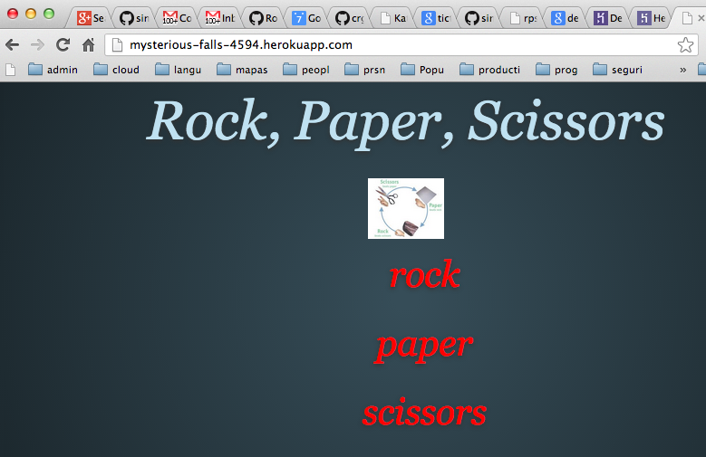

Siguiente: Dyno sleeping and scaling Subir: Introducción Anterior: Deploy your application to Índice General Índice de Materias
You’ve deployed your code to Heroku, and specified the process types in a Procfile.
You can now instruct Heroku to execute a process type.
Heroku does this by running the associated command in a dyno - a lightweight container which is the basic unit of composition on Heroku.
Let’s ensure we have one dyno running the web process type:
$ heroku ps:scale web=1Veamos que dice la ayuda:
$ heroku help ps Usage: heroku ps list processes for an app Additional commands, type "heroku help COMMAND" for more details: ps:restart [PROCESS] # ps:restart [PROCESS] ps:scale PROCESS1=AMOUNT1 ... # ps:scale PROCESS1=AMOUNT1 ... ps:stop PROCESS # ps:stop PROCESS $ heroku help ps:scale Usage: heroku ps:scale PROCESS1=AMOUNT1 ... scale processes by the given amount Example: heroku ps:scale web=3 worker+1
You can check the state of the app’s dynos.
The heroku ps command lists the running dynos of your application:
$ heroku ps === web: `bundle exec ruby web.rb -p $PORT` web.1: up for 9mHere, one dyno is running.
[~/sinatra/sinatra-rock-paper-scissors/sinatra-rockpaperscissors(master)]$ heroku ps Process State Command ------- ----------- ------------------------------------ web.1 idle for 8h bundle exec rackup config.ru -p $P..
We can now visit the app in our browser with heroku open.
[~/sinatra/rockpaperscissors(master)]$ heroku open Opening http://mysterious-falls-4594.herokuapp.com/ [~/sinatra/rockpaperscissors(master)]$
